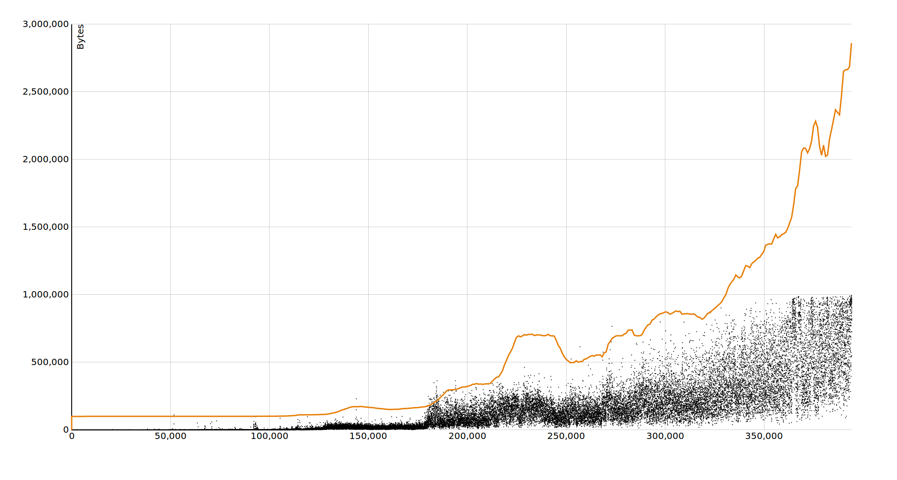
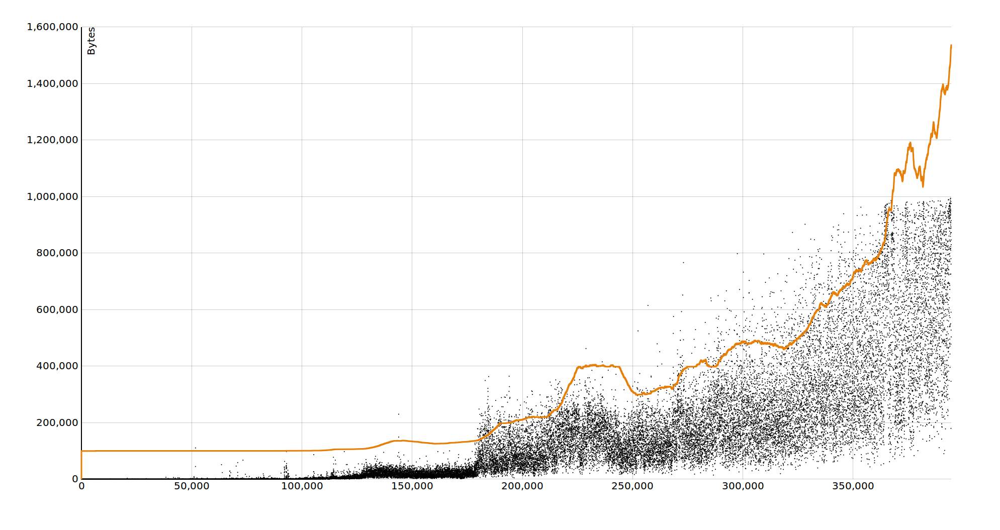

Adaptive Block Size Limit Comparisons
The charts are generated based on historical Bitcoin livenet block sizes (CSV). The orange line represents the maximum block size. Each black dot on the graph represents a block, where the y coordinate as the bytes of the block and the x as the block height.
Differences in Sample Size
These graphs show various range of previous blocks used to calculate the median. The maximum block size is the median doubled with an additional 100,000 bytes added, and recalculated once a week.
Last day (144 blocks)
Last week (1,008 blocks)
Two weeks (2,016 blocks)
Last month (4,320 blocks)
3 months (12,960 blocks)
6 months (25,920 blocks)
Last year (52,560 blocks)
2 years (105,120 blocks)
Differences in Multiplier
The graphs show various multipliers applied to the median. They all use a sample size of 3 months (12,960 blocks), with 100,000 bytes added, and calculated once a week.
1.25 times
1.5 times
2 times
3 times
4 times

5 times
10 times
20 times
Differences in Interval
The graphs show variations of the interval that the maximum block size is calculated, in a similar way that the mining difficulty changes once every 2016 blocks. All graphs use a three month median multiplied by 2 with 100,000 bytes added.
Every block (1 block)

Every day (144 blocks)
Once a week (1,008 blocks)
Once every two weeks (2,016 blocks)
Once every month (4,320 blocks)
Once every 3 months (12,960 blocks)
Once every 6 months (25,920 blocks)
Once every year (52,560 blocks)
Once every 2 years (105,120 blocks)
These graphs show variations of methods for calculating the moving median and average. All graphs use a sample size of three months multiplied by 2, with 100,000 bytes added, and recalculated for every block.
Moving Median
function movingMedian(range) {
range.sort(function(a, b) {
return a - b;
});
var even = (range.length % 2 === 0);
var m;
if (even) {
var mid = range.length / 2;
var sum = range[mid] + range[mid + 1];
m = Math.round(sum / 2);
} else {
var mid = Math.floor(range.length / 2);
m = range[mid];
}
return m;
}
Moving Average
function movingAverage(range) {
var total = range.length;
var sum = range.reduce(function(a, b) {
return a + b;
}, 0);
return Math.round(sum / total);
}
Exponential Moving Average
function exponentialMovingAverage(blockSize, numberOfBlocks, lastBlockSizeAverage) {
var k = 2 / (numberOfBlocks + 1);
return blockSize * k + lastBlockSizeAverage * (1 - k);
}
Weighted Moving Average
function weightedAverage(range) {
var triangle = range.reduce(function(a, b, n) {
return a + n;
}, 0);
var result = 0;
for (var i = 0; i < range.length; i++) {
result = result + (range[i] * (i + 1) / triangle);
}
return Math.round(result);
}
Conclusion
In overview of the above comparisons:
- The exponential moving average formula has an advantage that it can be calculated at an interval of every block quickly as it's based only on the previous blocks average and the current block. A block index could keep record of these values for consensus purposes. The sequential nature of validiting blocks in the chain goes will with this method of calculation.
- The moving median in comparison with moving average lowers the influence of large or small blocks anomalies. However increasing the sample size for both median and average calculations has an similar effect. The average tends to produce a smoother graph.
- The moving average, exponential moving average and weighted moving average are roughly indistinguishable. In the goal of having a property of being difficult or slow to influence, the properties of an average and exponential moving average are preferred, as the weighted average will give more signifigance to more recent blocks.
- Recalculating the maximum block size in larger intervals would also make increasing the size require more signifigant amount of time. Such that if the maximum block size was only recalculated once per year, the maximum rate that the blocksize could grow would be to multiplied once per year. So long as the maximum block sizes are hardly ever reached, sudden changes in the size shouldn't be noticable in confirmation times. However the same could be achieved with a smaller multiplier, at more frequent recaculaton rate. And a smoother transaction in the maximum size guarantee that there wouldn't be any sudden changes that could lead to unexpected behavior.
- Sample sizes that are larger than the mining difficulty adjustments have the benefit of diminishing single miner influence. A miner that suddenly were able to achieve 51% of the total hash power because of a rapid advance in hashing technology would still only represent a small percentage of the calculated maximum block size. This is because the difficulty would be increased in that time period.
I think we should:
- Prefer recalculations of the maximum block size at a more frequent rate for smooth and expected behavior.
- Have a sample size that is several times the difficulty adjustment period to produce robust maximum size that requires significant hashing power and transaction volume to influence.
- Have a multiplication factor that historically would not have hindered the growth of the network in a major way.
For example, here are the maximum block sizes calculated from historical blocks with a 1 year (52,560) exponential moving average recalculated for every block, and 100,000 bytes added to the maximum.